Paper is one of those magical craft supplies that can turn into almost anything. You probably already have a stack sitting at home, and that is all you really need to get started. These fun paper crafts are beginner-friendly, low-mess, and genuinely enjoyable for kids of all ages. We picked 20 of the best ideas so you have plenty to choose from no matter what kind of afternoon you are having. 🎉
Some of these fun paper crafts for kids take as little as 15 minutes, others are a bit more involved, but every single one ends with something your child will feel proud to show off. Grab some scissors and colored paper and let the fun begin.
What You'll Need
Stock up on these basics and you will be ready for nearly any fun paper craft on this list without a last-minute supply run. ✂️
- Construction paper, a large colorful assorted pack gives you every color you need.
- Washable glue sticks, easy for small hands and cleanly washable when things get sticky.
- Child-safe scissors, blunt-tipped and safe for toddlers and young crafters.
- Googly eyes, assorted sizes work great for puppets, animals, and characters.
- Washable markers, for drawing faces, decorating, and adding vivid color.
- Clear tape or a stapler, handy for a few of the 3D and hanging projects.
- String or yarn, needed for the mobile and hanging craft ideas.
- Brad fasteners (paper fasteners), useful for spinning pinwheels and movable parts.
20 Fun Paper Crafts to Make with Your Kids
1. Paper Fortune Teller
Fold a square sheet of paper into the classic fortune teller (also called a cootie catcher) shape by folding corners to the center twice and shaping the flaps. Let your child decorate the outside flaps with colors and numbers, then write silly fortunes or little messages inside. This is one of those fun paper crafts that kids instantly want to make again and again, and once they learn the folds they can make one for every friend at school too.
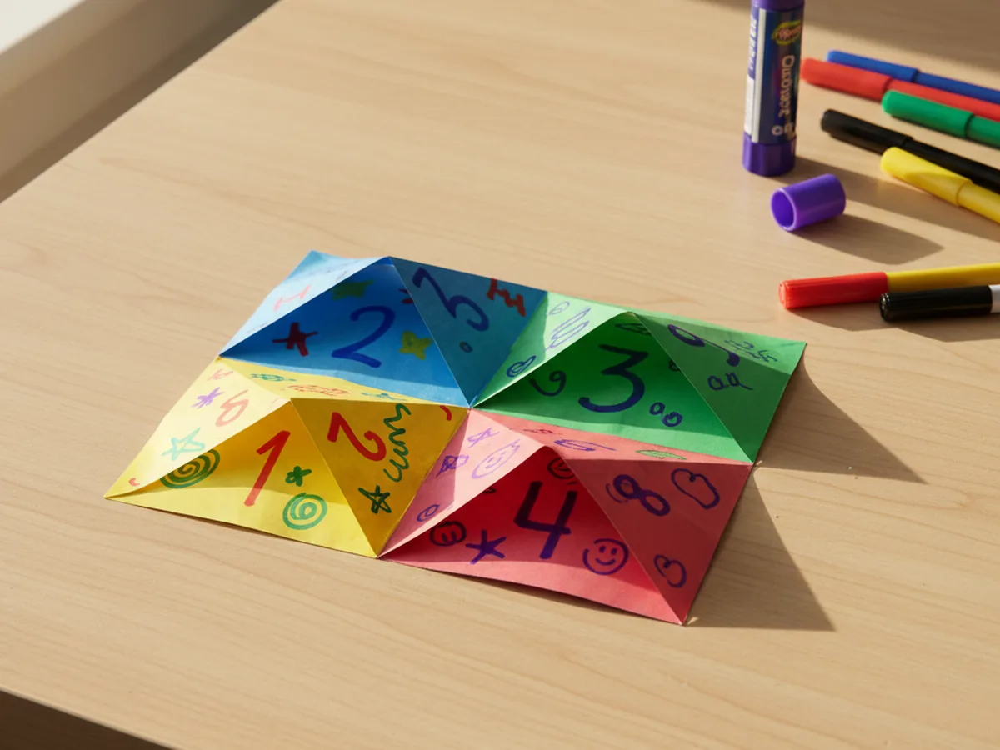
2. Paper Airplane
Fold a sheet of plain paper into a classic dart airplane, then decorate it with stripes, stars, or flames before sending it flying across the room. Older kids can try more advanced folding styles like the wide glider or the stunt plane that loops back. Fun paper crafts do not get much more exciting than this one because the payoff is instant and the flying is endless. Make several in different colors and have a distance contest.
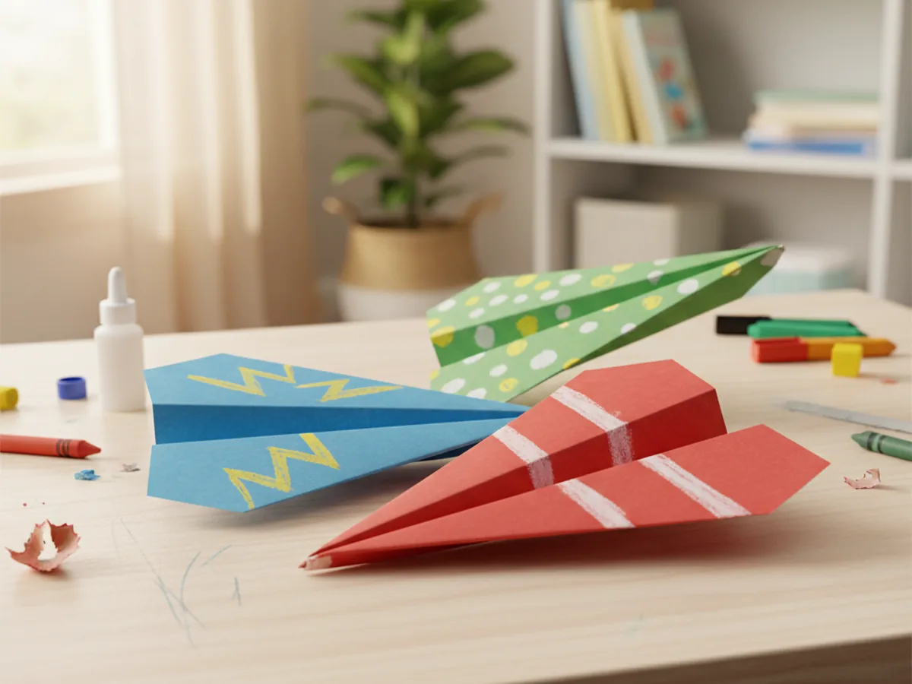
3. Paper Lantern
Fold a sheet of construction paper in half lengthwise, cut slits from the fold almost to the edge at regular intervals, then unfold it and roll it into a cylinder shape. Attach a paper handle at the top and your lantern is ready to display. Kids love choosing bold or contrasting colors, and the finished lantern looks wonderful hanging from a doorway or ceiling. This ranks among the most popular fun paper crafts for kids because the result is genuinely beautiful and takes only 15 minutes to make.
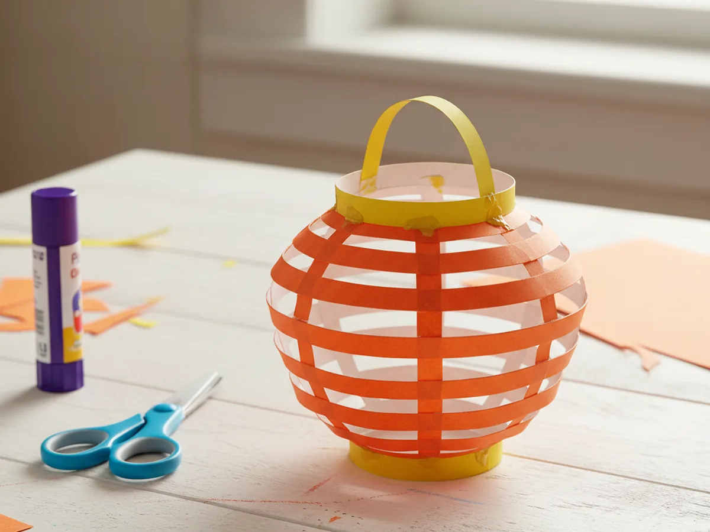
4. Paper Finger Puppets
Cut small rectangles of cardstock and roll each one into a tube that fits snugly on a finger, then draw on faces, add paper ears, or glue on yarn hair to create a cast of characters. Make a whole family, a zoo of animals, or fairy tale characters for an afternoon of imaginative play. This is one of those paper crafts that turns into a full hour of storytelling once the making is done. Even toddlers can help glue on googly eyes and bits of paper.
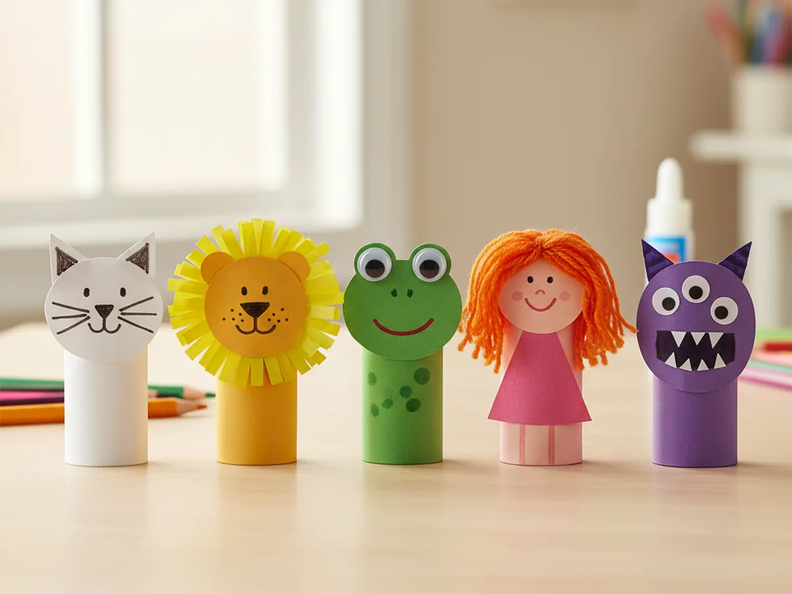
5. Paper Chain Garland
Cut strips of colored paper and link them into interlocking loops, gluing each end together as you go, to build a long rainbow chain garland. Use a repeating color pattern for a classic look, or go wild with random colors for a party feel. Younger kids absolutely love adding loop after loop and watching the chain grow longer. Hang it across a window, a mantel, or a bedroom wall for instant cheerful decoration.
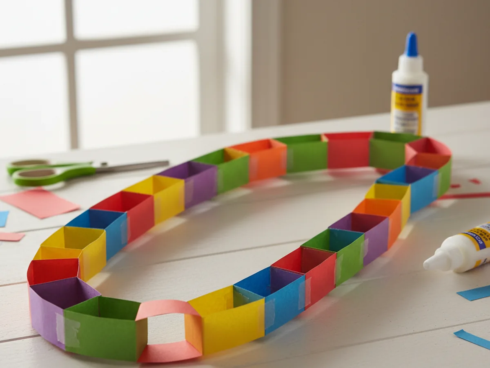
6. Paper Star Mobile
Fold and cut five-pointed stars from colorful paper, then hang them at different lengths from a wooden twig or a cardboard crossbar using string. Vary the sizes from tiny to large for a layered, dimensional look. The mobile turns gently in any breeze and looks lovely above a crib, a reading nook, or on a covered porch. This is a wonderfully calm and satisfying fun paper craft that doubles as real home decor.
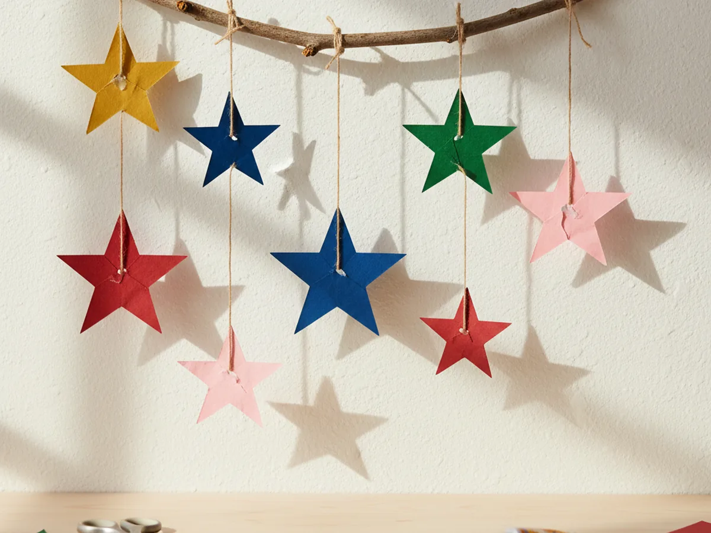
7. Paper Accordion Fan
Fold a full sheet of paper back and forth accordion-style all the way down its length, then pinch one end and secure it with a small strip of tape or a rubber band to form the handle. Fan out the top and your child has a real working fan they made themselves. Decorate the paper with stripes or flowers before folding for a prettier effect. One of the most instantly rewarding fun paper crafts out there, and it is actually useful on a warm day.
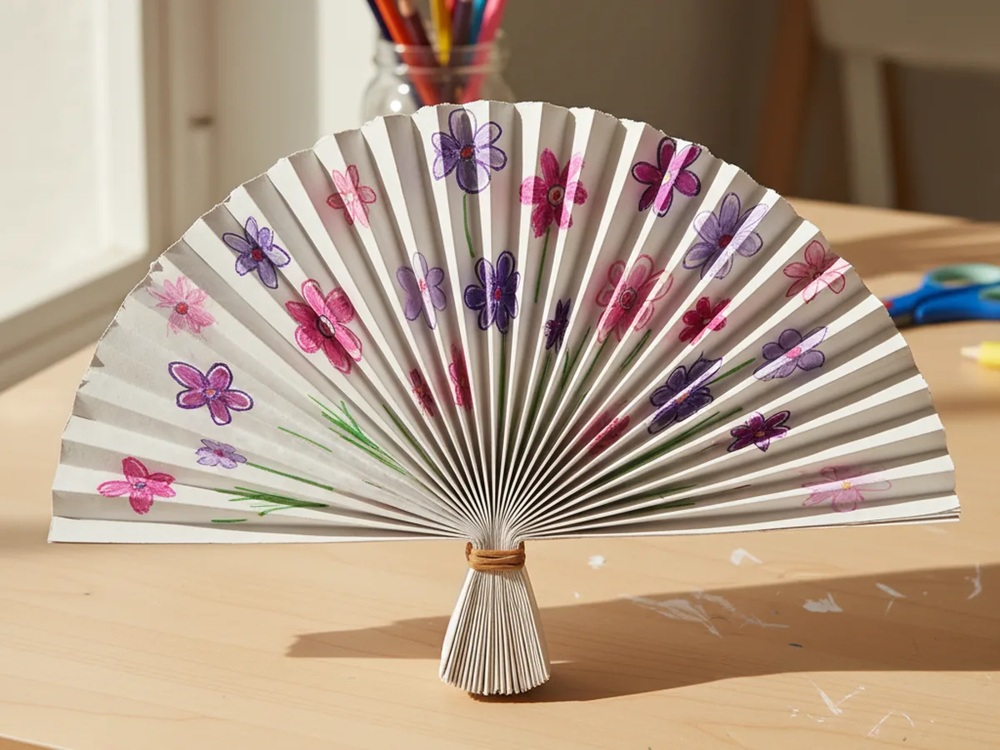
8. Paper Rocket Ship
Roll a sheet of construction paper into a tall cone for the nose, tape it to a cardstock tube body, and add triangular paper fins at the base. Paint or draw flames shooting out the bottom, and your rocket is ready for launch. Kids can personalize their rocket with stripes, stars, and a name on the side. This is one of those fun paper crafts for kids that sparks huge imaginative play the moment it is finished.
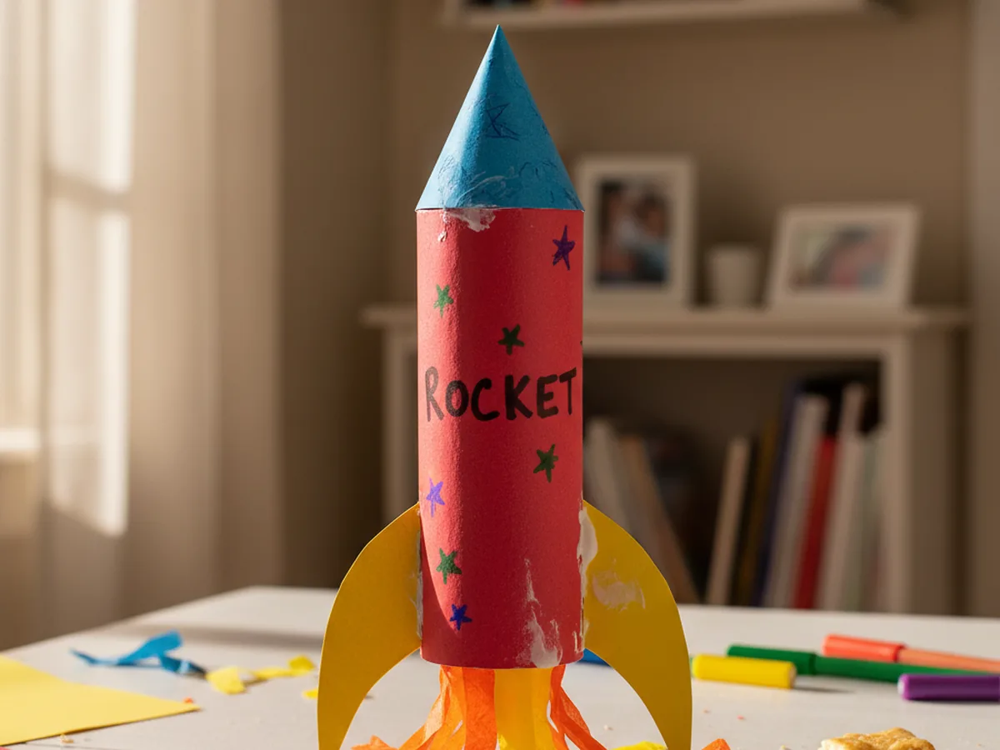
9. Paper Mosaic Art
Tear or cut scrap paper into small irregular pieces of varying colors, then glue them close together onto a cardstock background to fill in a simple outline shape like a fish, a sun, or a butterfly. The mosaic effect is stunning and every piece looks different depending on the colors your child chooses. This is a wonderful fun paper craft for using up scraps, and it develops patience and fine motor skills without feeling like work at all.
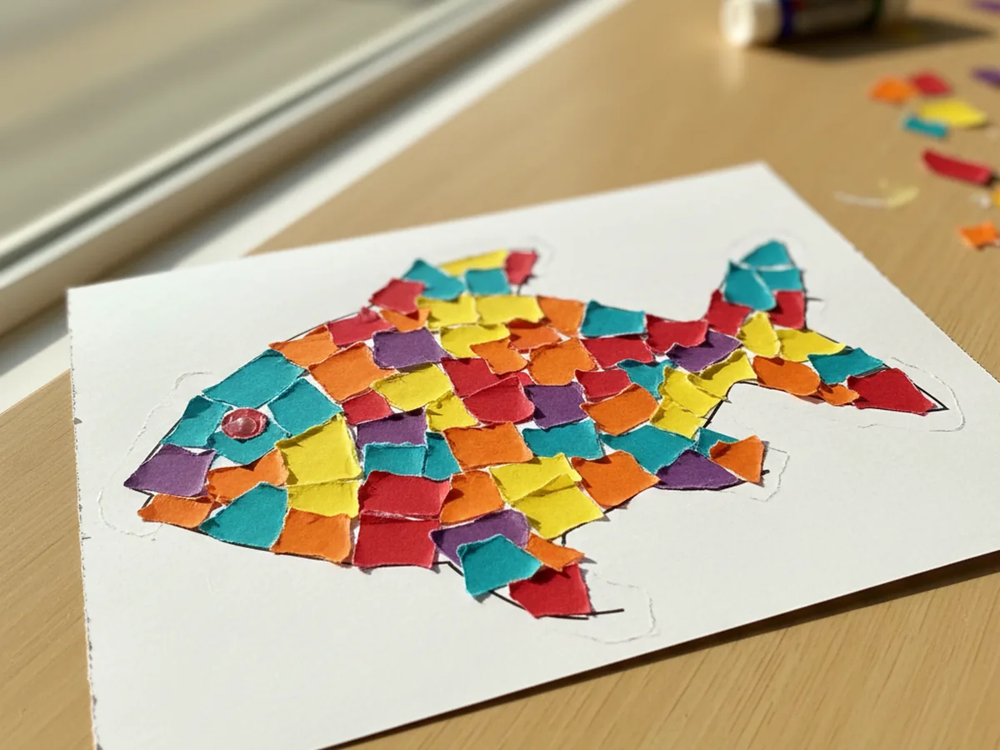
10. Paper Weaving Placemat
Cut a sheet of cardstock into even horizontal strips, stopping before you reach one edge so the strips stay attached. Then weave contrasting color paper strips over and under through the gaps to create a woven placemat pattern. Tape the ends down when done. This classic craft teaches an actual weaving technique in a completely approachable way, and the finished placemat is sturdy enough to actually use at the table.
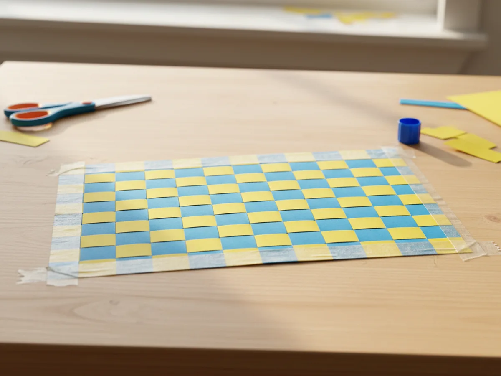
11. Paper Windmill
Cut a square of paper, make diagonal cuts from each corner toward the center without meeting in the middle, then fold every other point to the center and pin everything in place with a brad fastener through a straw or pencil. The windmill spins beautifully in a breeze or when your child blows on it. Decorate before assembling with patterns, dots, or swirls for the best visual effect when spinning. A timeless favorite among fun paper crafts that never loses its charm.
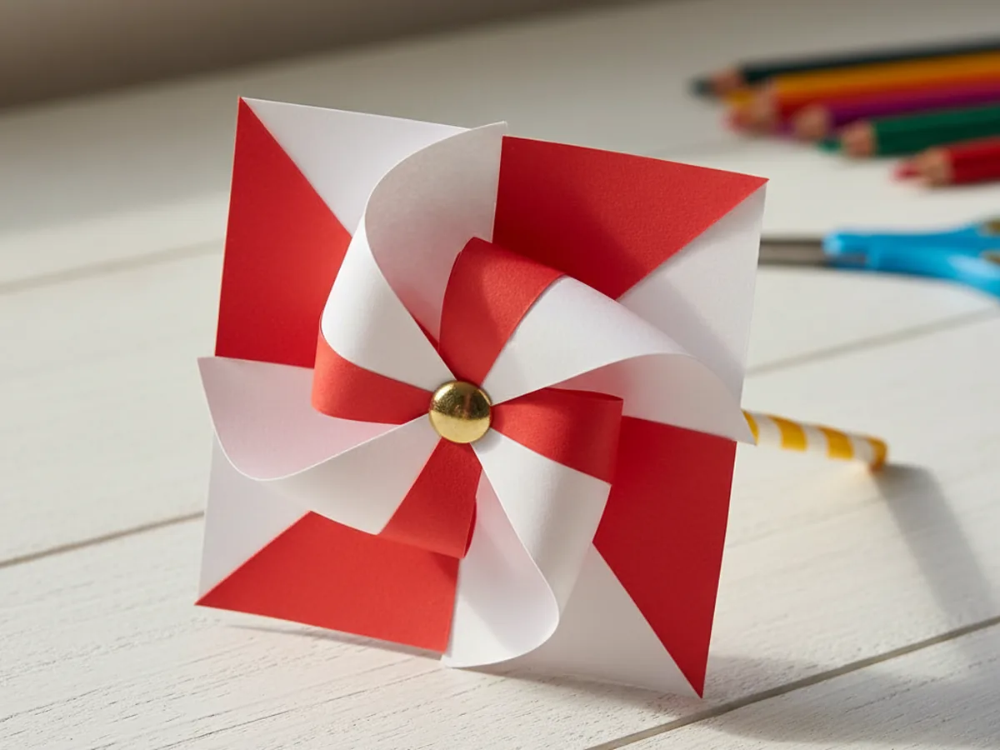
12. Paper Jellyfish Mobile
Cut a large circle from cardstock and fringe the edges or attach long strips of crepe paper or tissue paper to the bottom to form the trailing tentacles. Draw a gentle face on the dome, then hang several finished jellyfish from a branch or hanger at different heights using thread. The tentacles sway with any movement and the whole mobile looks magical. This is one of the most visually beautiful paper crafts on this list, and kids love watching them drift.
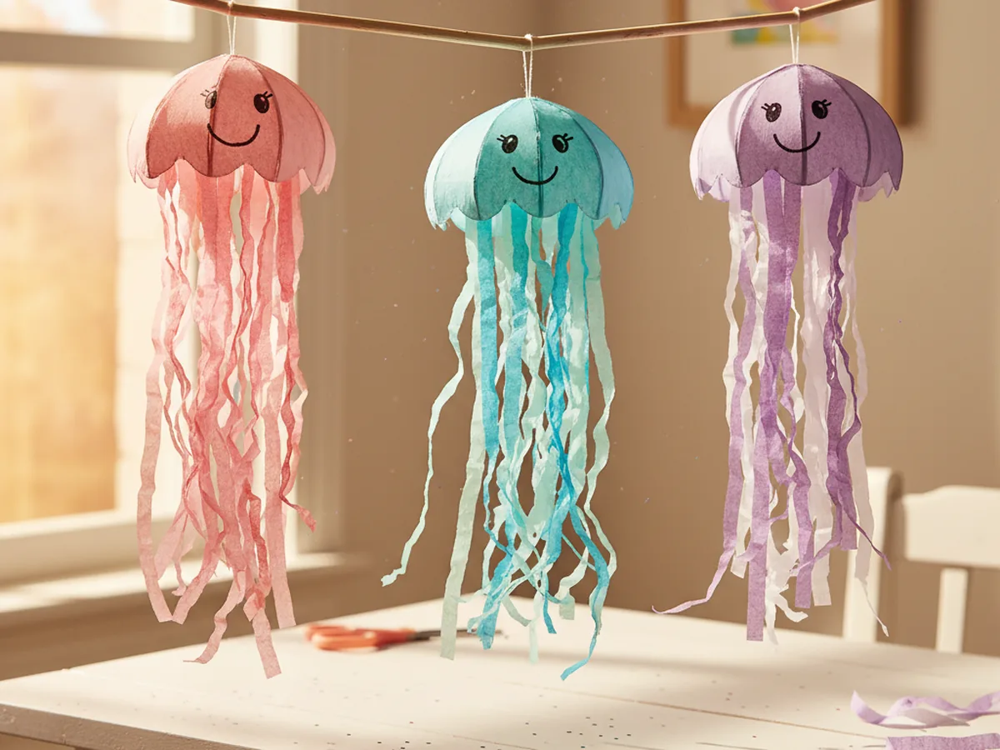
13. Paper Flower Headband
Cut a strip of cardstock to fit around your child's head and secure the ends together. Then cut simple flower shapes from colored paper and fold the petals up slightly to give them dimension before gluing them along the band. Add paper leaves between the flowers for a garden-fresh look. Kids love wearing something they made themselves, and this headband holds up surprisingly well for a full afternoon of pretend play.
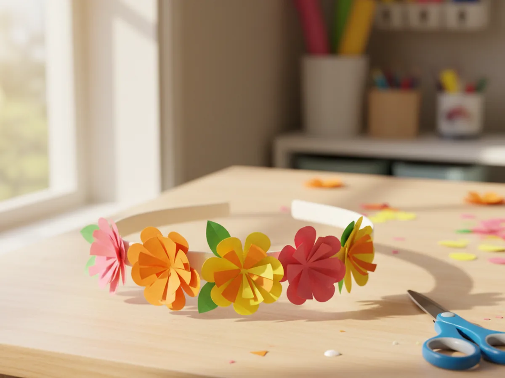
14. Paper Aquarium Scene
Cut fish, seaweed, bubbles, and sea creatures from colored paper and arrange them inside a shoebox laid on its side or on a large blue cardstock background to create an underwater scene. Let your child design their own sea creatures and position them however they like. This becomes a whole storytelling world once it is assembled. Among fun paper crafts for kids with imaginative play built in, this one is hard to beat.
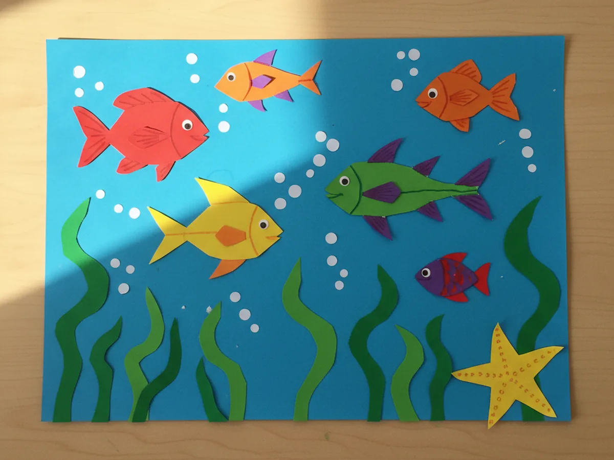
15. Paper Suncatcher
Cut a frame shape from black cardstock and fill it with small torn or cut pieces of colorful tissue paper or cellophane to create a stained-glass suncatcher effect. Tape it to a window and watch the light shine through in beautiful colors. This is one of those fun paper crafts where the final reveal, when you hold it up to the light, always gets a delighted reaction. Keep it simple with a basic square frame or try heart and star shapes for seasonal versions.
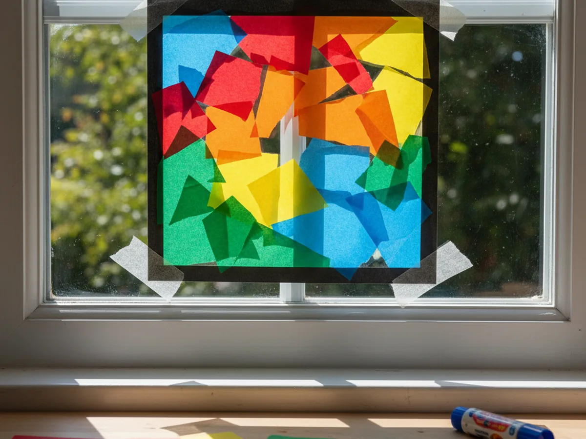
16. Paper Spinner Top
Cut a circle from thick cardstock and decorate it with a swirling pattern of bold colors. Push a short pencil stub or blunt toothpick through the center, spin it on a flat surface, and watch the colors blend into each other as it spins. The spinning and the blending colors fascinate younger kids especially, and they will want to try different color combos to see what happens. A simple and surprisingly mesmerizing craft that takes almost no time to make.
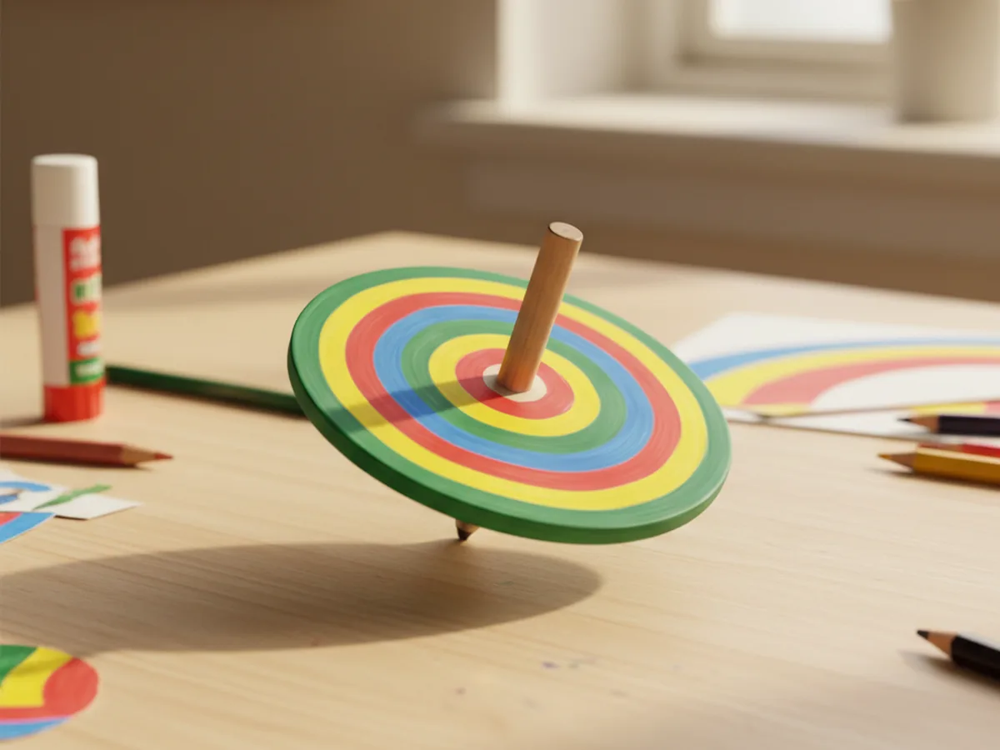
17. Paper Animal Mask
Draw a large oval on cardstock for the face, cut eye holes, and then add paper ears, a nose, and any facial markings that match your chosen animal. Punch holes at the sides and tie on elastic or ribbon to wear it. Lions, pandas, frogs, and foxes all work beautifully and the results are endlessly cute. This is one of the most wearable fun paper crafts on the list, and once the masks are on, the imaginative play takes over on its own.
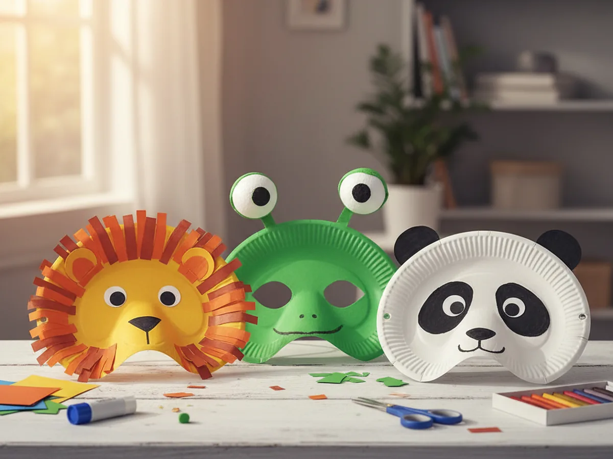
18. Paper Pom-Pom Decoration
Stack several sheets of tissue paper together, fold the whole stack accordion-style, tie it in the center with a small piece of string, then gently fan out and fluff each layer to form a full round pom-pom. Make several in different colors and hang them as a garland or cluster them together as a party decoration. These look impressively full and professional for how simple they are to make, and kids love the fluffing step at the end.
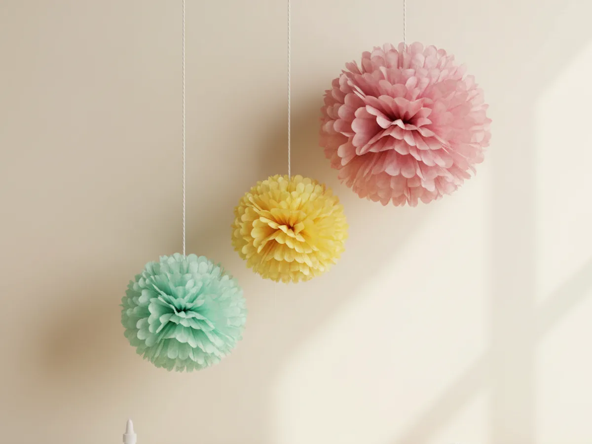
19. Paper Pop-Up Card
Fold a sheet of cardstock in half, make two parallel cuts into the fold, then push the cut section through to the inside to create a pop-up platform. Glue a small paper figure, animal, or scene onto that platform and close the card flat. When the recipient opens it, the figure springs up. This is a classic among fun paper crafts that teaches real engineering principles through a project your child will feel genuinely proud to give as a gift.
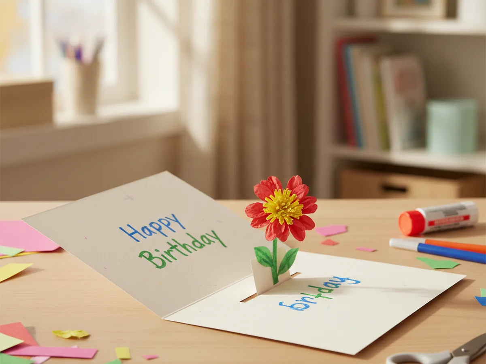
20. Paper Gift Box
Fold two square sheets of cardstock into open box shapes, one slightly larger than the other, to create a lid and a base. Decorate the outside with drawings, stickers, or cut-paper patterns before assembling. Once finished, the box is sturdy enough to hold a small gift, a folded note, or a handful of treats. Making your own gift packaging is one of the most satisfying fun paper crafts because the making and the giving come together in one sweet project. 🎁
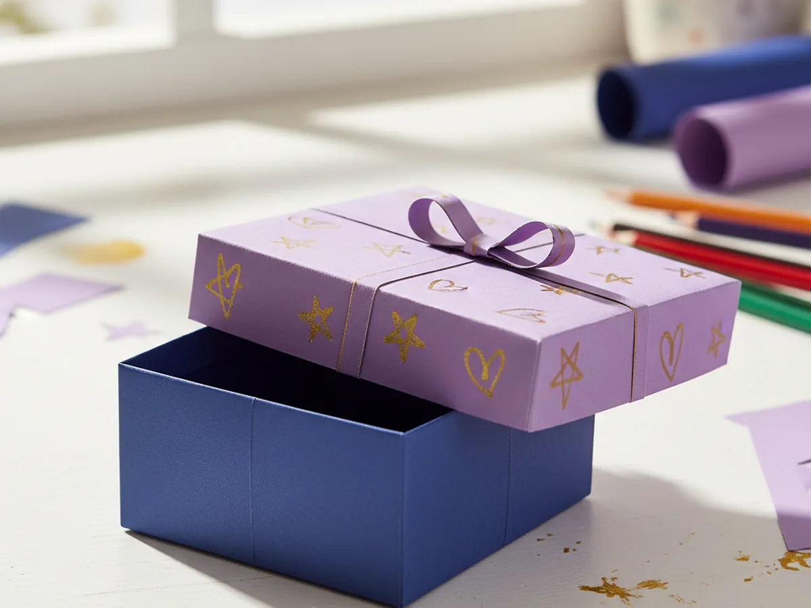
Final Thoughts
There is something really special about watching a child pick up a piece of paper and turn it into something they are genuinely proud of. These fun paper crafts are designed to be low-pressure, easy to start, and satisfying to finish, no matter how old your child is or how crafty you feel. You do not need much to have a great afternoon together, just paper, some basic supplies, and a little bit of time. 🌟
Pick one idea that feels right for today and enjoy the moment. The best crafts are the ones you actually do.
More Crafts You'll Love
If you enjoyed these ideas, here are a few more paper craft articles worth exploring.
Happy crafting with your little one!